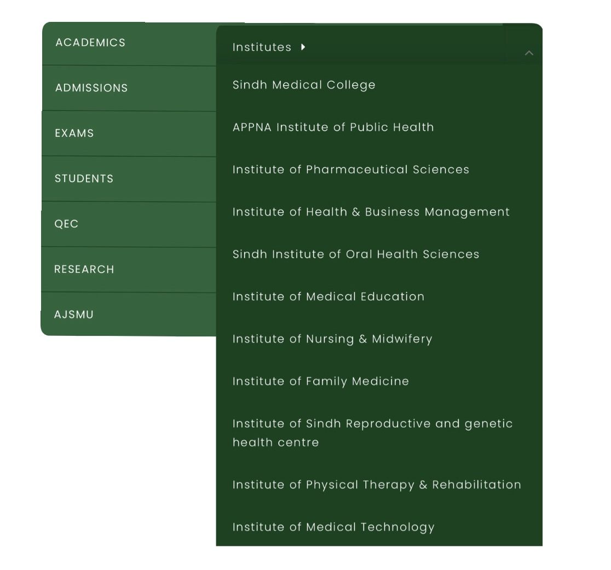
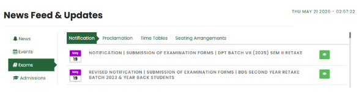
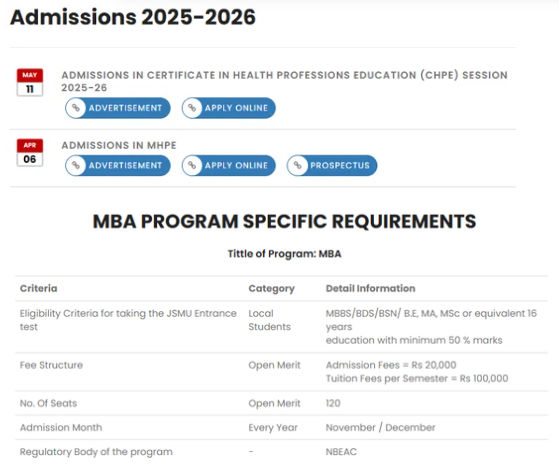
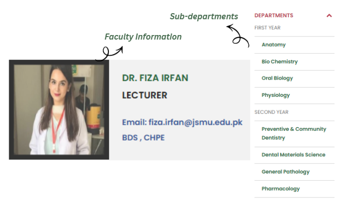
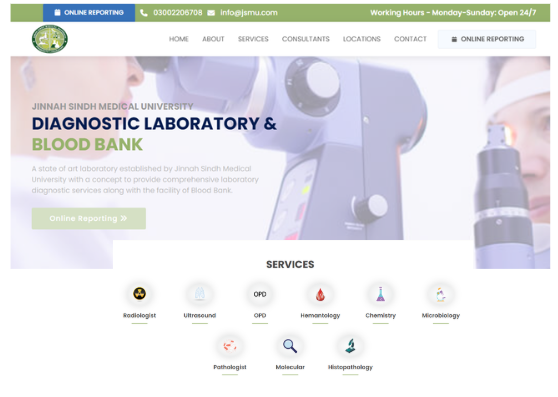

A redesign project for Jinnah Sindh Medical University (JSMU), one of Pakistan’s leading public medical institutions, focused on restructuring information, simplifying navigation, updating content, and improving access to academic and healthcare services.
Information architecture, content restructuring, UX improvements, navigation design, page redesign, content updates, interface refinement, stakeholder collaboration
Website audit and content review
Restructuring information across 11 departments
Content hierarchy and navigation simplification
Redesign of academic and admissions sections
Department-level page organization
Diagnostic service visibility improvements
Interface refresh and usability improvements
The work focused on understanding how institutional information should be organized and accessed.
Activities included:
Each department maintained separate pages and content while following a unified system. The goal was balancing consistency, scalability, and information clarity.


Created a structured framework for 11 departments, allowing:

Organized university content into clear navigation layers:
Academic Information → Departments → Services → Updates → ResourcesThis reduced content fragmentation.

The platform included visibility for diagnostic and laboratory services, allowing users to access healthcare information alongside university content.
JSMU diagnostic services include laboratory and blood bank functions together with multiple clinical areas.

Project outcomes focused on:
Improved content organization
Better access to admissions information
Clearer navigation structure
Reduced information fragmentation
Better visibility of healthcare services
The project focused on information architecture and institutional content management rather than visual redesign alone.
The case demonstrates experience in: